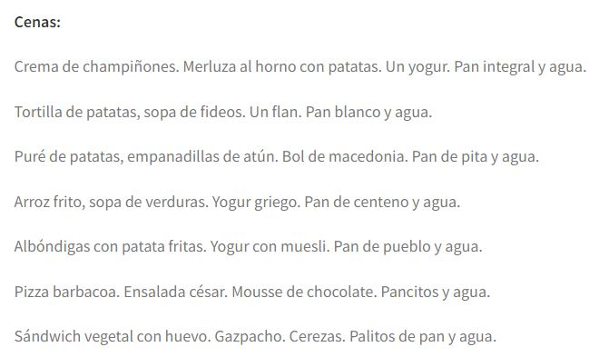
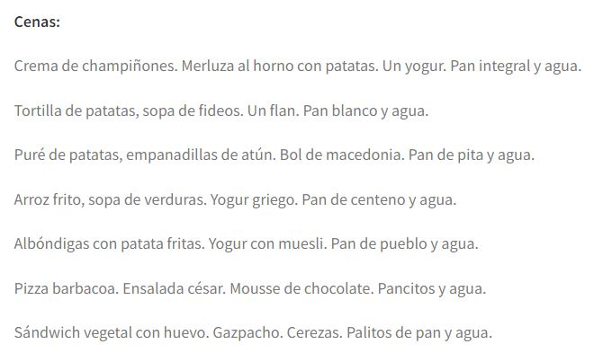

La dieta hipercalórica es un régimen alimenticio en el que se incrementa la ingesta calórica. Es decir, a diferencia de la anterior, donde se restringía el aporte calórico, aquí se aumenta, aportando al organismo más energía de la que, a priori, necesita. Puede usarse puntualmente en personas que necesitan subir de peso o incrementar su masa muscular y mientras las calorías vengan de productos saludables y no se alargue el régimen más de lo necesario, no hay problemas.

 
